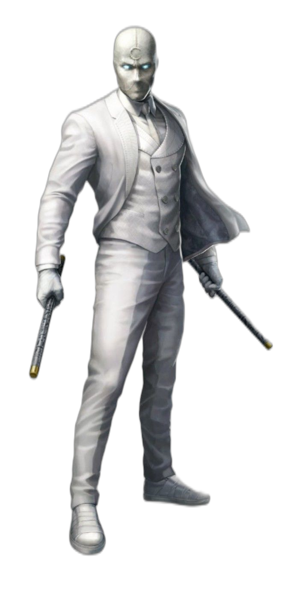

MOON
KNIGHT
MARC SPECTOR


Who is Moon Knight?
Moon Knight, also known as Marc Spector, is a complex and enigmatic superhero. A former mercenary, he was resurrected by the Egyptian moon god Khonshu and now serves as his avatar, protecting the innocent and delivering justice under the cover of darkness. With his multiple identities and unparalleled combat skills, Moon Knight is a force to be reckoned with.
Moonknight
Identity: The armored superhero identity; Crime-fighter embracing Khonshu’s mission.
Purpose: Inspire fear and deliver justice.
Strengths: Unpredictable combatant, skilled with gadgets, enhanced strength (moon-dependent), potential near-invulnerability.
Weaknesses: Mental instability, vengeance obsession, potential blind obedience to Khonshu.
Key Enemies: Black Spectre, Midnight Man, Sun King.
First Appearance: Suit established in Moon Knight #1 (1980).
Role: The weapon/external face of the system; delivers justice.
Khonshu Connection: Entirely tied to Khonshu’s will; sometimes believes he is Khonshu's voice.
I don't wear the mask to hide who I am. I wear it to create what I am.